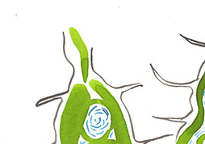

Peatlands’ Resonance: Figuring nature and culture in Dutch Hoogvenen

pantea and Kate Foster in collaboration with dr Roy van Beek and dr Juul Limpens
Overview
Backstory: Who We Are
New Story
Other Stories
Collaboration
Taking Time
Going Places
Peatlands’ Resonance - 2021